VSCode 配置python虚拟环境（激活环境细节）
转载声明
- 原文标题：VSCode 配置python虚拟环境（激活环境细节）
- 原作者：LaoTan_
- 原文链接：https://blog.csdn.net/m0_73550224/article/details/135662877
- 原文首次发布：2024-01-18，修改于 2024-01-20
- 许可协议：CC BY-SA 4.0
本文依据原文重新排版和整理，配图来自原文。部分命令拼写、安全范围和文字表述已作校正；转载本文时也请遵循相同许可协议。
省流
1. 从命令面板创建环境
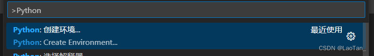
2. 可以选用conda环境，也可以使用venv环境
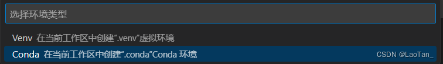
或者
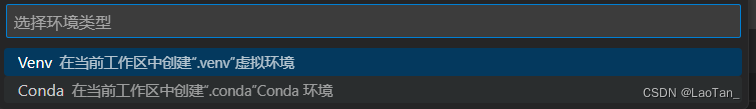
前言
为每个 Python 项目建立独立环境，可以隔离解释器和第三方包，减少不同项目之间的版本冲突。VSCode 可以直接创建并选择 Conda 或 venv 环境，也可以让 Jupyter Notebook 使用同一个环境中的内核。
开始前请安装 VSCode，并在扩展市场安装 Microsoft 发布的 Python 扩展；需要运行 Notebook 时还应安装 Jupyter 扩展。
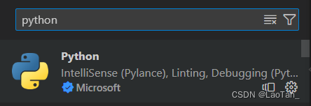
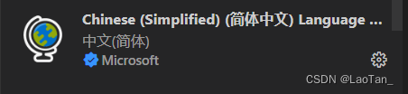
一、使用 Conda 创建虚拟环境
这种方式适合需要在不同项目中使用不同 Python 版本的情况。开始前需要安装 Anaconda 或 Miniconda，并保证终端能够识别 conda 命令。
1. 从命令面板创建环境
在 VSCode 中打开项目文件夹，然后按 Ctrl + Shift + P 打开命令面板，搜索并执行 Python: Create Environment（Python：创建环境）。
环境类型选择 Conda。
接着选择项目需要的 Python 版本。VSCode 会在工作区中创建环境，请等待右下角的进度提示完成，不要中途关闭窗口。
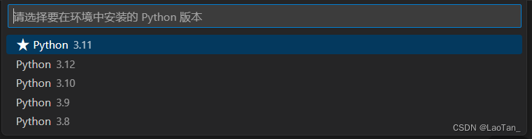
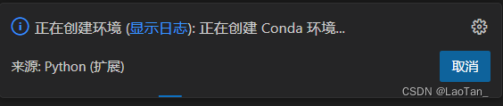
创建完成后，可以在资源管理器中看到对应的环境目录。
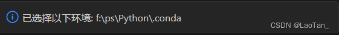
2. 检查解释器是否可用
新建 main.py：
1 | import sys |
点击右上角运行按钮，或选择“在专用终端中运行 Python 文件”。输出的解释器路径应指向刚创建的环境。
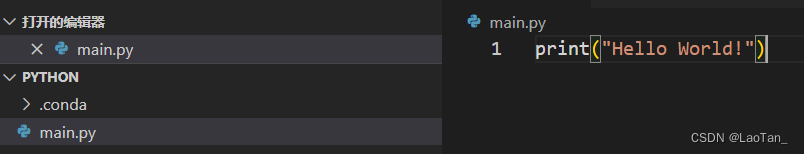
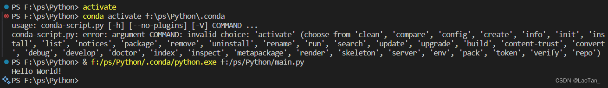
3. 在终端中激活 Conda 环境
如果直接使用一个没有激活环境的终端，pip 可能会把包安装到全局解释器。可以在 VSCode 终端右侧的下拉菜单中新建 Command Prompt，VSCode 通常会自动激活当前选择的 Conda 环境。
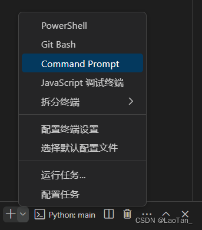
终端提示符前出现环境名后，再执行安装命令：
1 | python -m pip install 包名 |
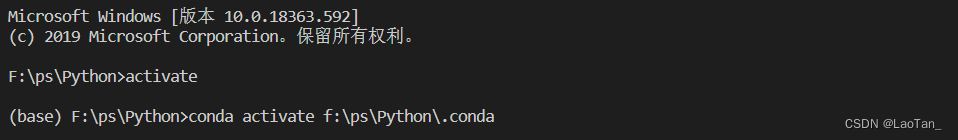
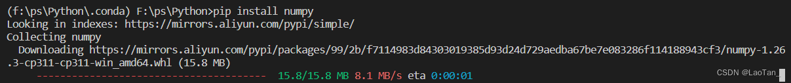
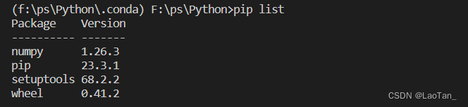
4. 常用 Conda 和 pip 命令
1 | # 查看已有环境 |
临时使用镜像源时，可以在安装命令后添加 -i：
1 | python -m pip install 包名 -i https://pypi.tuna.tsinghua.edu.cn/simple |
二、使用 Python 自带的 venv
如果项目不需要频繁切换 Python 大版本，可以使用标准库自带的 venv。它更轻量，但创建环境时使用的是本机已经安装的某个 Python 解释器。
1. 在 VSCode 中创建 .venv
同样通过 Ctrl + Shift + P 执行 Python: Create Environment，这次选择 Venv。
随后选择用于创建环境的 Python 解释器。
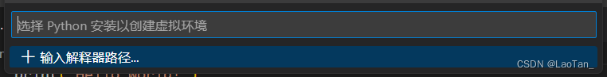
环境创建完成后，项目目录中会出现 .venv 文件夹。可以运行前面的测试程序，确认 sys.executable 指向项目内的 .venv。
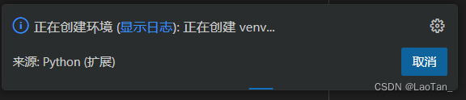
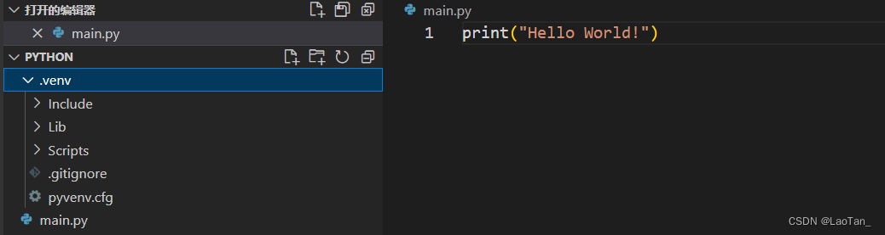
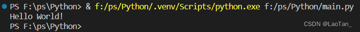
2. 手动激活环境
Windows PowerShell：
1 | .\.venv\Scripts\Activate.ps1 |
Windows Command Prompt：
1 | .venv\Scripts\activate.bat |
macOS 或 Linux：
1 | source .venv/bin/activate |
退出环境：
1 | deactivate |
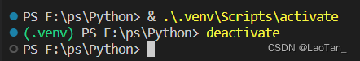
3. PowerShell 禁止执行激活脚本
如果 PowerShell 提示系统禁止运行脚本，可以先查看当前策略：
1 | Get-ExecutionPolicy -List |
仅为当前用户允许本地脚本运行：
1 | Set-ExecutionPolicy -Scope CurrentUser RemoteSigned |
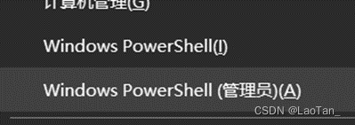
执行前请确认命令来源可信，并阅读 PowerShell 的安全提示。相比直接修改整台机器的策略，CurrentUser 范围只影响当前用户。
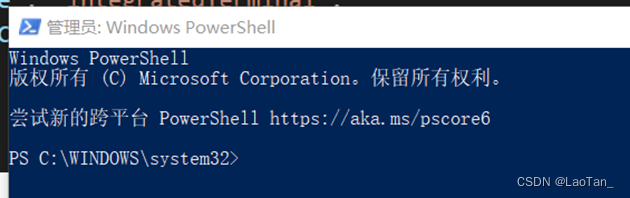
重新打开终端并激活 .venv，提示符前出现 (.venv) 后即可安装依赖：
1 | python -m pip install 包名 |
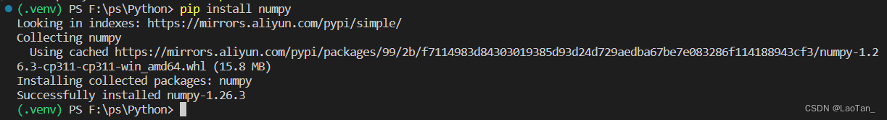
三、在虚拟环境中配置 Jupyter
1. 安装 VSCode Jupyter 扩展
在扩展市场安装 Microsoft 发布的 Jupyter 扩展。
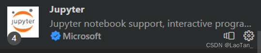
2. 在当前环境安装 Jupyter 与内核
先激活需要使用的虚拟环境，然后执行：
1 | python -m pip install jupyter ipykernel |
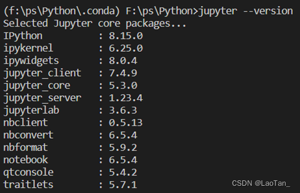
3. 创建 Notebook 并选择内核
按 Ctrl + Shift + P 打开命令面板，执行 Jupyter: Create New Jupyter Notebook。
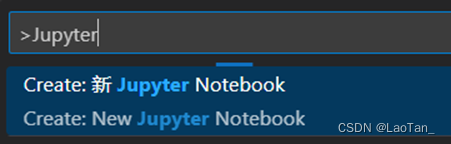
点击 Notebook 右上角的“选择内核”，选择刚才创建的 Conda 或 venv 解释器。内核必须和安装项目依赖的环境一致。
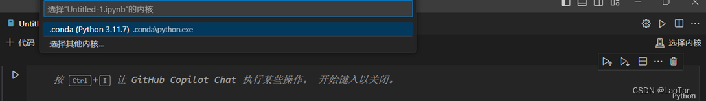
在单元格中输入简单代码，按 Ctrl + Enter 测试运行：
1 | import sys |
返回路径应位于目标虚拟环境中。
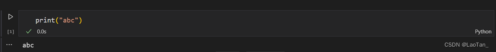
4. Jupyter 无法启动时的排查顺序
不建议一开始就盲目降级多个依赖。可以按以下顺序检查：
- 确认 VSCode 右上角选择的是目标环境内核。
- 在该环境中运行
python -m pip show jupyter ipykernel。 - 更新 VSCode 的 Python 与 Jupyter 扩展。
- 重启 VSCode，并重新选择解释器和内核。
- 仍有问题时，再根据终端的具体报错处理依赖版本。
总结
- 需要管理多个 Python 版本时，优先考虑 Conda。
- 只需要轻量的项目依赖隔离时，使用项目内的
.venv即可。 - 安装包前先确认终端已经激活正确环境，并优先使用
python -m pip。 - Jupyter Notebook 的内核应与项目解释器保持一致。
.venv、.conda等环境目录通常不应提交到 Git 仓库，应通过requirements.txt或环境配置文件记录依赖。